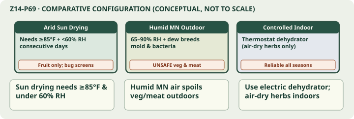

Z14-P69 · Food production and preservation · New manuscript
Understand why open-air sun drying fails reliably in humid Upper Midwest summers
Prevent mold, insect contamination, and foodborne spoilage by matching drying technology to actual regional humidity and weather.
When it applies · Assessing solar or outdoor drying feasibility in Minnesota and humid continental climates.
Equipment · Regional humidity/weather forecast, electric thermostat dehydrator, and screened indoor drying racks (herbs only).

Actions
- Recognize NCHFP's strict meteorological threshold for outdoor sun drying: safe sun drying of fruits requires consecutive days of 85°F+ heat AND humidity below 60% with minimal rain—conditions common in arid southwestern deserts, NOT humid Minnesota summers (typically 65%–90% relative humidity with overnight dew and sudden thunderstorms).[P11]
- NEVER attempt outdoor sun drying of vegetables or meats in humid climates—low-acid vegetables and meats spoil and grow harmful bacteria long before open humid air dries them, and outdoor trays attract flies, dust, and birds.[P11]
- Limit passive air-drying in northern climates strictly to clean, low-moisture culinary herbs hung in small loose bundles indoors in a warm, dry, airy dark room—using a thermostatically controlled electric dehydrator (or tested oven method) for all fruits, vegetables, and pre-heated jerky.[P11]
Failure recognition · Spreading sliced garden tomatoes and zucchini onto window screens outdoors in humid 78% RH July Minnesota air until fuzzy mold coats every slice.[P11]
Verify · Confirm controlled electric dehydrator used for fruits/vegetables/jerky in humid climates and indoor-only air-drying limited to dry herbs.[P11]
Stop or change course · Damp humid weather, overnight dew exposure, or insect contact on outdoor-drying produce requires discarding affected batches.[P11]
Evidence and editorial notes
- P11 · NCHFP · Drying Foods Safely (current web edition)
- Section: Drying Foods > Pretreatment, Temperature Control, Airflow, and Conditioning · Conditions: Electric dehydrators, controlled low ovens, or approved solar dryers for fruits, herbs, vegetables, and jerky
Support: Control temperature, low humidity, and continuous airflow simultaneously to remove moisture before spoilage occurs; blanch vegetables where directed, heat meat to safe internal temperatures per NCHFP jerky guidelines, and condition dried fruits to equalize residual moisture before airtight storage.
Limitations: Case-hardening (too hot early) traps wet interiors that mold in storage; open-air outdoor drying fails in humid climates like Upper Midwest summers. · Conflicting evidence: None; separates safe controlled dehydration from high-risk raw-meat drying.
Editorial note: Grounds dehydration equipment, jerky safety, and moisture-equilibrium checks. · Specialist reviewer: Food preservation and food safety specialist
Primary source · checked 2026-11-24
Current assessment · A04-P11 (2026-11-25) · Reopened: earlier closure narrowed (A04): The canning locator is wrong. Both sourced subsets are retained. Veg pretreatments and separate jerky heat schedules need their exact tested procedures; reopen composite. Limits: Specialist review PENDING (Food preservation and food safety specialist); publication HOLD. All release decisions pending.
Source lineage · NCHFP Drying Foods Safely; new manuscript · Classification · New manuscript.